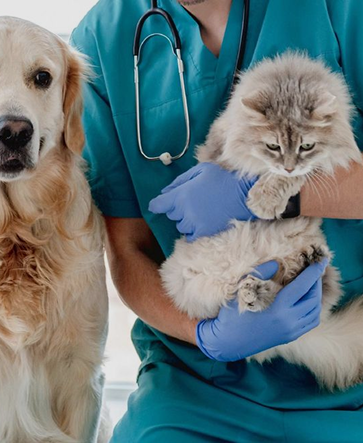

최신 근거에 기반한 진단과 윤리적 판단을 통해
불필요한 치료를 지양하고, 동물의 삶과 질을 최우선으로 한 진료를 제공합니다.
최신 연구와 임상 데이터를 바탕으로
검증된 진단과 치료만을 제공합니다.
불필요한 고통을 최소화하고,
동물의 입장에서 결정합니다.
전문 의료진이 유기적으로 협력해
최적의 치료 방향을 도출합니다.
과정과 치료 선택지를 충분히 설명하고
보호자의 이해와 동의를 존중합니다.
정해진 진료시간 내 예약 진료를 원칙으로 하며,
원활하고 정확한 진료를 위해 진료과별 운영 시간을 안내합니다.
오전 09:00 ~ 오후 06:00
※ 모든 진료는 사전예약제입니다.
토요일, 일요일 및 공휴일
위급한 경우에 한하여 상시 운영
각 진료과목은 분야별 전문 의료진이 담당하며,
정확한 진단과 체계적인 치료를 제공합니다.
반려동물의 상태에 맞는 진료를 차분하게 시작할 수 있도록
전문 의료진이 처음부터 끝까지 함께합니다.
신뢰할 수 있는 진료 예약을 지금 진행하세요.
근거 중심의 진료와 윤리적 판단을 공유하며,
동물과 보호자를 존중하는 의료를 함께 만들어갈
인재를 기다립니다.
Recruitment
notice

서울특별시 관악구 관악로 1 80동
지하철 2호선 서울대 입구역 3번 출구 (관악구청 방향) → 시내버스 이용 → 서울대학교 동물병원 하차 → 서울대학교 입간판 좌측 방향으로 약 100m 이동 → 도착
지선
시내버스 5511, 5513, 6513, 6511간선
시내버스 651, 501남부순환도로 봉천사거리 구로방면 좌회전, 사당방면 우회전 → 서울대 정문 교차로 직전 서울대입구역 방향으로 유턴 → 입간판에서 우회전
도로
남부순환도로 이용